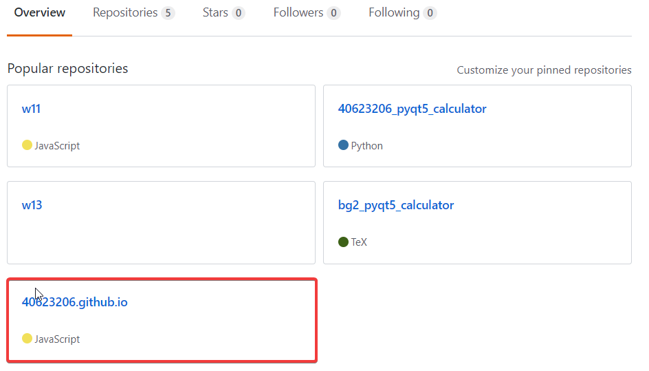
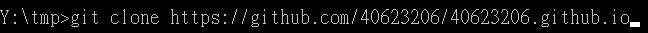
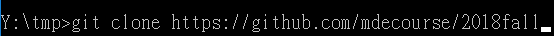
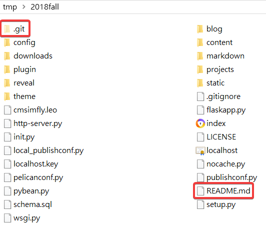
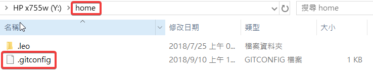
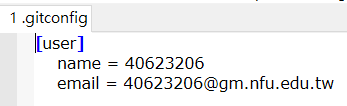
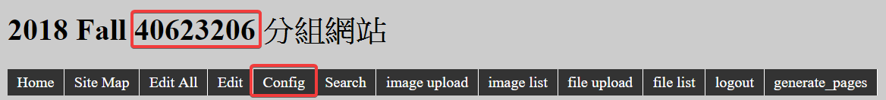

課程內容
建立一個學號.github.io的倉儲

clone自己的倉儲與老師的倉儲


.git 和 README.md以外的複製到自己的資料夾

設定自己提交的名字


git status查看檔案的狀況
git add .
git commit -m "initial add"
git push將檔案推回去
改分組網站的title
先輸入python wsgi.py

git status查看檔案的狀況
git add .
git commit -m "title"
git push將檔案推回去
心得
當第一次聽到Onshape時，以為是什麼程式語言的軟體，其實是一個繪圖軟體，雖然沒聽過，但會想去嘗試，還蠻期待的，有網路就可以使用，希望能熟練Onshape